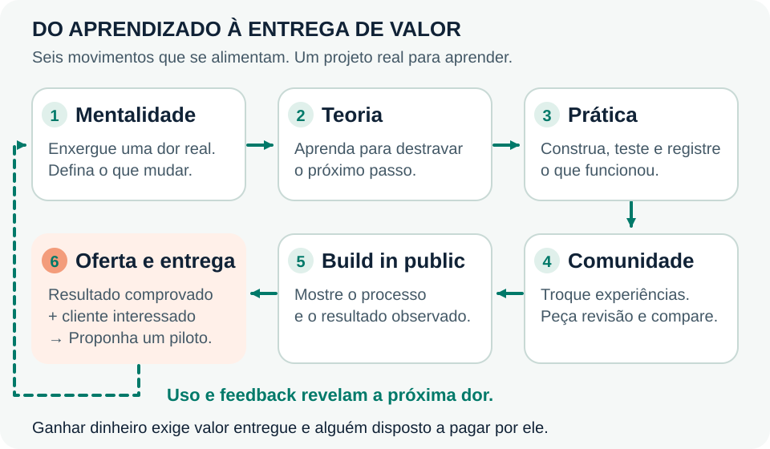

Jornada do Engenheiro de IA
Construa com IA. Mostre o que funciona. Aprenda a transformar isso em um serviço pago.
Da primeira automação à primeira oferta: conecte mentalidade de IA, teoria, prática, comunidades e construção em público. Use um agente desde o início e avance em quatro entregas.

Prévia compacta · clique no desenho para ampliar.

80% prática · 20% teoria · Sem prazo fixo · Um projeto que pode virar uma oferta
Pedidos sem retorno. Relatórios montados à mão. Informação espalhada que ninguém encontra. Escolha um desses problemas, construa uma solução pequena e mostre a melhoria para quem vive aquela dificuldade.
O percurso principal está inteiro nesta página: explicações, exemplos, exercícios, fontes e roteiro de oferta. Use o índice para ir direto ao ponto.
Começar com meu agente · Fazer as quatro entregas · Construir em público · Preparar uma oferta
Mentalidade de IA: aprenda a enxergar possibilidades
Pense no agente como alguém que acabou de chegar para ajudar no trabalho. Essa pessoa precisa entender a tarefa, encontrar as informações certas, conhecer as ferramentas e saber quando chamar você. Com IA, essas perguntas também orientam a construção.
Ao ver uma atividade repetitiva, investigue: o que entra, o que precisa ser decidido, qual ação vem depois e como alguém confere o resultado? Você começa a perceber oportunidades quando observa o processo inteiro.
Conhecer projetos de outras pessoas amplia seu repertório. Experimente uma possibilidade que hoje parece fora do seu alcance: peça ajuda à IA, faça uma versão pequena e veja onde precisa melhorar. A confiança cresce com os testes e com as entregas.
Exercício de hoje: anote três tarefas que se repetem na sua rotina ou na de alguém próximo. Para cada uma, escreva quem faz, o que dá trabalho e como você observaria uma melhora. Escolha a tarefa para a qual consiga obter exemplos e conversar com quem a executa.
Pergunta que acompanha a jornada: quem teria um dia de trabalho melhor se esta tarefa funcionasse bem?
LLM, agente e Hermes: o motor e o carro
Um LLM é como o motor: uma peça central que oferece capacidade ao conjunto. Ele interpreta o contexto e gera respostas ou pedidos de uso de ferramentas.
Um agente é como o carro montado: reúne o modelo, as instruções, o contexto, as ferramentas e o ciclo de execução. O Hermes Agent oferece essa estrutura pronta para você configurar e usar.

Prévia compacta · clique no desenho para ampliar.
- O destino é a tarefa: “organizar os pedidos recebidos”, por exemplo.
- O mapa é o contexto: documentos, regras e informações disponíveis para aquela tarefa.
- As rodas e a transmissão são as ferramentas: levam a decisão até uma ação, como ler um arquivo ou salvar um registro.
- O painel e os freios são as verificações e os limites: mostram o que aconteceu e permitem interromper uma ação.
- Você escolhe a viagem: define objetivo, acesso e limites e confere se o resultado corresponde ao pedido.
É uma analogia para entender as peças. No agente, o modelo também pode participar da escolha dos próximos passos. Um modelo mais capaz ajuda, mas a qualidade da solução depende de contexto, ferramentas e testes. Consulte a documentação oficial do Hermes quando precisar configurar uma dessas partes.
Comece por aqui
Minha recomendação — Lucas
Se puder investir em um curso agora, recomendo o curso e a comunidade do Bruno Okamoto, no Pixel AI Hub. Considero um ótimo início e o Bruno um ótimo mentor. Comece por lá e continue a construção nesta jornada.
Não tenho nenhuma parceria com o Bruno Okamoto. Essa é uma recomendação pessoal, porque considero o trabalho dele um ótimo ponto de partida.
Se estiver sem orçamento para um curso, assista ao meu vídeo Crie seu Agente de IA Hermes em menos de 20 minutos. Coloque seu agente para funcionar e use essa base nos exercícios abaixo. O vídeo é aberto; o uso de modelos, ferramentas e hospedagem pode ter custos conforme a configuração escolhida.
Já tem um agente funcionando? Comece pela primeira entrega abaixo com uma tarefa sua. Você vai melhorar o mesmo projeto, observar resultados, mostrar o trabalho e investigar se ele pode ajudar um cliente.
Quatro entregas, um projeto que ganha valor
Vamos acompanhar um exemplo: um prestador de serviços recebe perguntas sobre horários, opções e documentos necessários para um orçamento. Você quer ajudá-lo a responder com informação correta e organizar os pedidos.
Adapte esse exemplo para uma tarefa que conhece. Faça cada entrega até conseguir mostrar o resultado e explicar o que verificou.
1 · Faça uma tarefa funcionar
Escolha uma tarefa pequena e descreva o resultado esperado. Antes de mexer nas ferramentas, preencha:
- Quem precisa disso:
- O que essa pessoa faz hoje:
- Qual parte o agente vai ajudar a fazer:
- Como vou conferir o resultado:
No exemplo, comece pedindo ao agente que identifique a dúvida de uma mensagem e sugira a próxima pergunta. Dê objetivo, contexto e formato de resposta. Uma instrução inicial poderia ser:
Ajude a organizar pedidos de orçamento.
Identifique o serviço procurado e a informação que ainda falta.
Use apenas os dados da mensagem.
Responda com: serviço, dúvida principal e próxima pergunta.
Quando algo não estiver claro, indique a dúvida.Experimente uma mensagem completa, uma incompleta e outra fora do assunto. Compare duas versões da instrução com os mesmos exemplos.
Entrega: três testes registrados e uma instrução que você consegue explicar. Anote uma falha e o próximo ajuste.
2 · Dê informação confiável ao agente
Prepare um documento curto com serviços, horários, perguntas frequentes e data de atualização. Oriente o agente a usar esse material e indicar de onde tirou a resposta.
O documento funciona como um manual de consulta: a qualidade da resposta depende do que está escrito e de o agente realmente consultar o trecho certo. Quando o sistema busca informação relevante antes de responder, esse caminho é conhecido como RAG.
Faça três perguntas: uma respondida pelo material, uma sem resposta e uma ambígua. Depois, altere uma informação do documento e repita o teste. Confira se a mudança apareceu na resposta.
Entrega: uma resposta com fonte que você consegue conferir, um exemplo de informação ausente e um teste de atualização. Se o agente inventar um dado, investigue o material consultado e a instrução antes de adicionar novas ferramentas.
3 · Conecte uma ação útil
Use uma ferramenta que o agente já oferece. Comece consultando um arquivo; depois, permita salvar um resumo ou organizar um pedido em uma tabela de teste.
Pense na ferramenta como a chave de uma sala: ela dá acesso a um lugar e a determinadas ações. Defina quais arquivos ou registros podem ser lidos e alterados. Teste primeiro com dados fictícios.
No exemplo, o agente registra serviço procurado, dúvida e informação pendente. Confira o registro no destino. Envie o mesmo pedido novamente e veja se ele cria uma duplicata indesejada. Retire um dado necessário e observe se pede ajuda.
Entrega: uma ação que deixa um resultado verificável, com limites claros e uma forma de interromper. A mensagem “feito” precisa corresponder ao que aconteceu no arquivo ou na tabela.
4 · Teste, melhore e demonstre
Prepare cinco situações: uma pergunta comum, uma informação ausente, um pedido ambíguo, uma ação repetida e uma ferramenta indisponível. Registre pedido → resultado esperado → resultado observado → ajuste necessário.
Corrija uma falha e repita os mesmos testes. Mostre a tarefa completa para alguém que conhece o problema. Observe onde essa pessoa precisa de ajuda e pergunte o que tornaria o agente útil no trabalho dela.
Compare o processo atual e o teste: tempo gasto, etapas manuais, correções necessárias e qualidade da resposta. Registre o que mediu e o que ainda é uma hipótese.
Entrega: uma demonstração, os testes, uma melhoria e o retorno de um possível usuário. Esses exemplos iniciam a avaliação; amplie a cobertura conforme o uso crescer. Havendo interesse, use o roteiro de oferta mais abaixo.
Teoria na hora em que ela ajuda
A teoria é como um mapa de estrada: ajuda a escolher o caminho e entender um desvio. Volte ao mapa quando surgir uma dúvida e aplique o que aprendeu na próxima tentativa.
80% prática e 20% teoria é a referência. Em uma sessão de uma hora, você pode usar 12 minutos para estudar, 28 para construir, 15 para testar e 5 para registrar o aprendizado. Ajuste a distribuição conforme a tarefa.
Para escolher o que estudar agora:
- Não entendi uma configuração do Hermes: consulte a documentação do projeto.
- Quero orientar melhor o modelo: explore uma atividade da Claude Academy.
- Preciso de um exemplo de implementação: procure a tarefa no OpenAI Cookbook, na documentação do Claude ou na documentação do Gemini, conforme a ferramenta que usa.
- Quero entender um conceito: consulte Generative AI for Beginners, da Microsoft, ou os fundamentos do Google quando quiser aprofundar.
- Quero guardar e apresentar o projeto: faça a atividade de introdução ao GitHub.
Na pesquisa, escreva a dúvida concreta. Hermes nome-da-ferramenta mensagem-do-erro ajuda mais do que uma busca ampla por “agentes”. No Google, use site: para procurar no domínio oficial e coloque a mensagem exata do erro entre aspas. Confira a versão e teste a orientação num exemplo pequeno.
História e base técnica continuam no material: a página de aulas completas reúne os sete temas, com exemplos e aprofundamentos na mesma página. Você pode consultar uma explicação e retornar ao projeto.
Comunidades: aprenda na oficina de quem está construindo
Pense na comunidade como uma oficina compartilhada. Você observa soluções, mostra uma peça que não funcionou e recebe ideias de quem já enfrentou algo parecido. O valor aumenta quando leva uma pergunta concreta e volta para contar o resultado.
- No X: acompanhe @ailucasdz e explore os perfis que acompanha. Escolha uma ideia para experimentar no seu projeto.
- No Discord da Nous Research: acompanhe discussões sobre Hermes, ferramentas e configuração.
- No Discord do OpenClaw: veja experiências de integração e uso de agentes.
- No curso e na comunidade do Bruno, se participar: leve dúvidas da construção e teste no seu agente o que aprender.
Para pedir ajuda, escreva: “Quero fazer X. Usei Y. Esperava Z. Aconteceu W. Já tentei isto. Minha dúvida é esta.” Inclua um exemplo pequeno, sem dados privados. Depois, registre o que resolveu.
Conversa com outros construtores ajuda na implementação. Para descobrir valor comercial, converse também com quem executa a tarefa no dia a dia e poderia contratar a solução.
Build in public: mostre o trabalho enquanto constrói
Construir em público é tornar visíveis suas tentativas, decisões e resultados. Funciona como uma vitrine com a oficina à vista: a pessoa vê o que você entrega e como confere a qualidade.
A cada entrega, publique algo concreto: uma demonstração curta, um desenho do processo, um antes e depois ou uma falha que conseguiu corrigir. Use dados fictícios ou autorizados e indique o que foi medido.
Um exemplo de atualização:
Estou construindo um agente para organizar pedidos de orçamento. Nesta versão, ele consulta um documento e registra a informação que falta. Testei cinco situações; uma pergunta ambígua ainda gerou um registro errado. Ajustei a instrução e vou repetir os testes. Quem organiza pedidos assim hoje: qual informação costuma faltar?
No GitHub, descreva o problema, como executar o projeto, uma demonstração, os testes e os limites conhecidos. No X ou no Discord, mostre o trecho do trabalho que rende uma conversa. Adapte ao espaço e às regras da comunidade.
Ao receber retorno, escolha uma mudança e mostre o resultado dela. A publicação ajuda outras pessoas a conhecer seu trabalho; a conversa sobre uma necessidade concreta é o que permite investigar uma oportunidade de serviço.
Como transformar o projeto em um serviço pago
Seu primeiro objetivo comercial é descobrir se existe alguém disposto a pagar pela melhoria que você consegue entregar. Comece por uma tarefa delimitada e por uma pessoa que possa avaliar o resultado.
Três exemplos de primeira oferta
Assistente para dúvidas de um serviço. Você organiza uma base aprovada pelo cliente, configura o agente, testa respostas e define quando encaminhar a uma pessoa. A entrega pode incluir instruções de uso e de atualização. Confira a correção das respostas e o esforço de revisão.
Organização de pedidos. Você configura a leitura de uma entrada autorizada e o registro dos campos combinados numa tabela. Testa dados ausentes e duplicatas. Confira o tempo da tarefa e a quantidade de correções manuais.
Relatório com fontes. Você configura um fluxo que lê arquivos fornecidos e prepara um relatório no formato combinado, indicando as fontes. Confira se as informações estão corretas e quanto trabalho de revisão permanece.
Esses exemplos são pontos de partida para conversar com um cliente. A tarefa escolhida, o acesso aos dados e o resultado observado determinam o que faz sentido oferecer.
Da conversa à proposta
- Entenda a rotina. Peça para a pessoa mostrar como faz a tarefa, com que frequência e onde perde tempo ou comete erros.
- Mostre uma demonstração relevante. Use exemplos fictícios semelhantes ao processo dela. Peça que confira a utilidade e indique o que falta.
- Se houver interesse, proponha um piloto pago. Combine uma tarefa, um período de teste negociado e critérios para aceitar a entrega.
- Entregue e acompanhe. Confira o resultado com o cliente, documente o uso e ajuste o que foi combinado.
- Converse sobre continuidade. Atualização de fontes, revisão de erros e suporte podem compor um serviço recorrente quando houver esse trabalho e interesse do cliente.
Escreva sua primeira oferta nesta estrutura
Para quem: [pessoa ou equipe e processo atual]
Problema: [tarefa e dificuldade observada]
Entrega: [o que o agente fará e onde]
Limites: [o que fica fora e quando haverá ajuda humana]
Teste de aceitação: [casos e resultado que o cliente vai conferir]
Prazo do piloto: [combinado com o cliente]
Valor e pagamento: [condições propostas para o serviço]
Consumo de ferramentas: [quem paga e qual limite será acompanhado]
Acompanhamento: [o que inclui e por quanto tempo]
Continuidade: [quem atualiza fontes, corrige falhas e dá suporte]Para formar o preço, estime seu trabalho de configuração, testes, ajustes, documentação e acompanhamento. Separe esses itens do consumo de modelos, ferramentas e hospedagem. Defina o que uma mudança fora do escopo exige renegociar. A proposta precisa caber no esforço que você consegue assumir e fazer sentido para o cliente.
Exemplo de escopo: “Configurar um assistente para responder sobre este catálogo aprovado e organizar os pedidos nesta tabela de teste. A entrega inclui os casos combinados, uma demonstração e instruções de atualização. Decisões fora do catálogo serão encaminhadas à pessoa responsável.” Preencha prazo, valor, consumo e acompanhamento depois de entender o trabalho.
Seu próximo movimento
Escolha uma pessoa, uma tarefa e uma melhoria que possa demonstrar. Coloque o agente para trabalhar, registre o que acontece e publique uma entrega. Use a teoria e a comunidade para resolver o próximo bloqueio. Converse com quem vive o problema e transforme o interesse em uma proposta concreta.
Voltar à primeira entrega · Aulas completas, na mesma página · Contribuir com o material